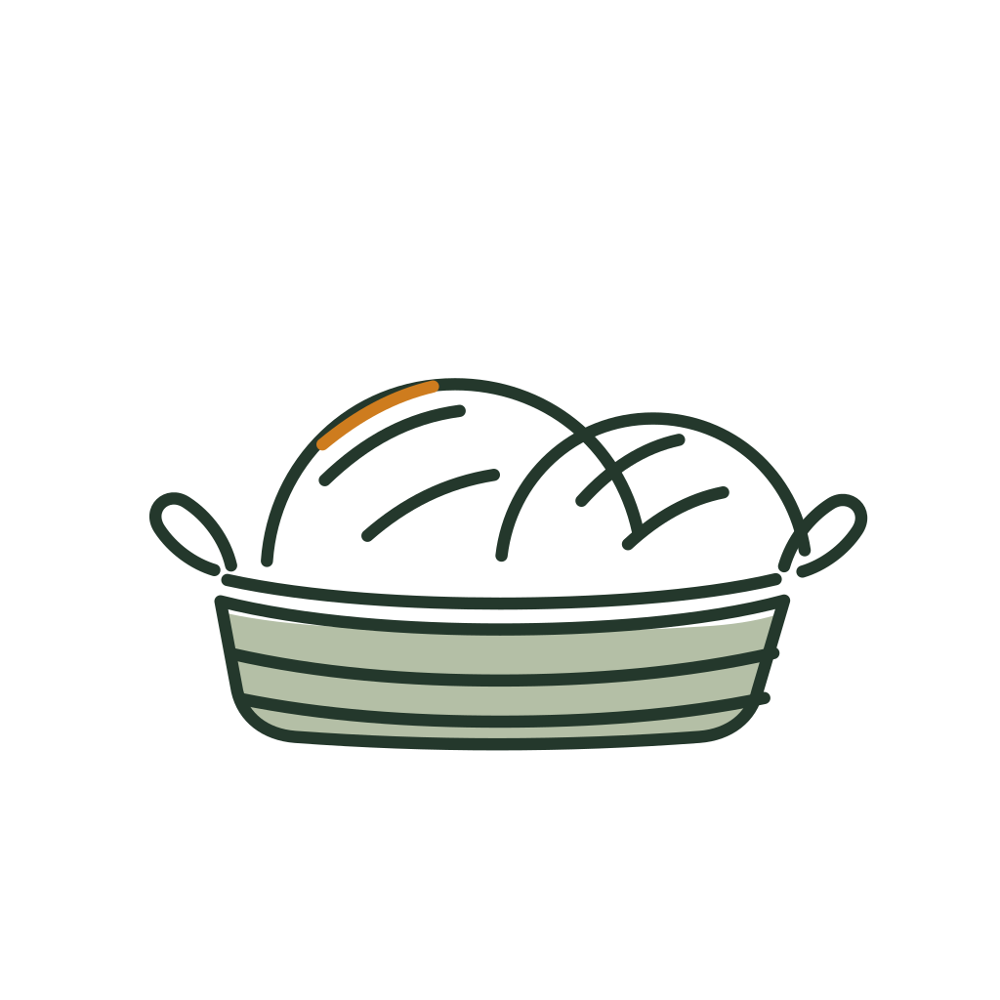
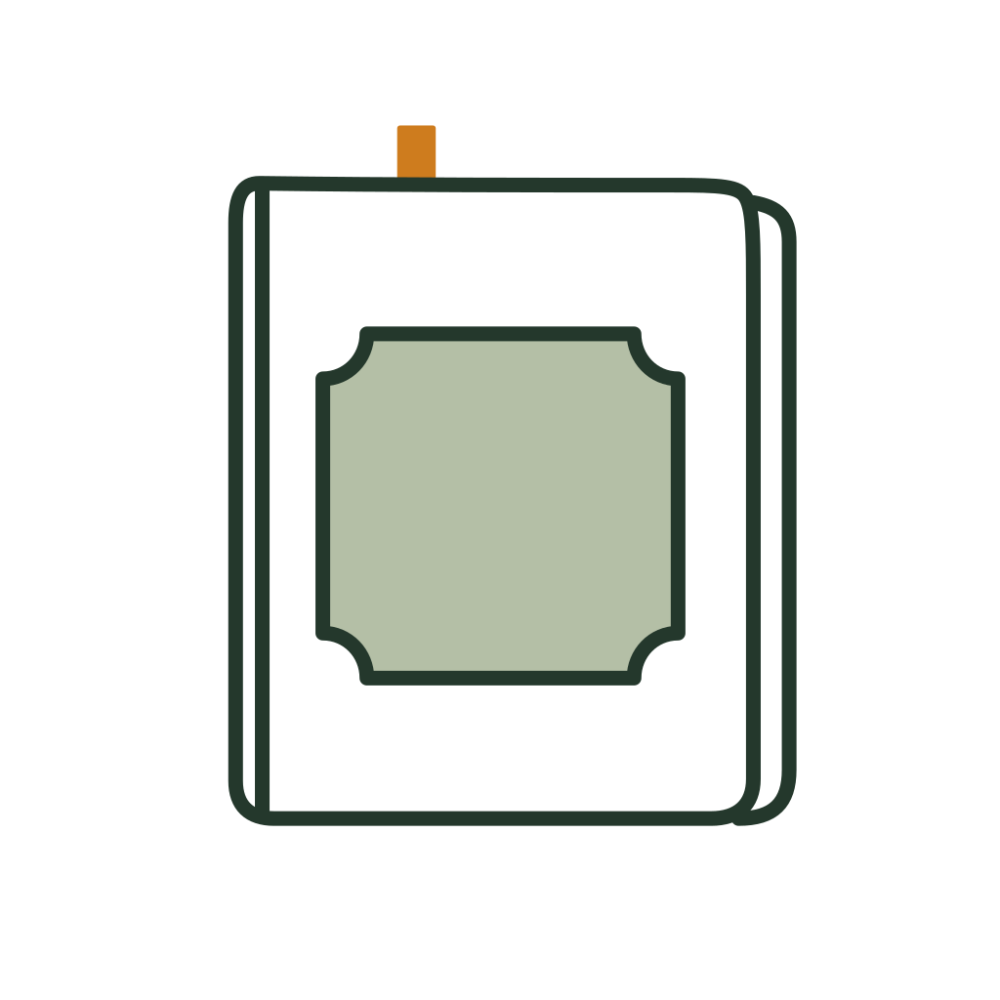

Receptdetaljen som referensvy, de fyra importvägarna, skafferi och familj, veckomenyns kärnvy och processlägen. Innehållsförteckning och de andra delarna: Skärmar v12.
v12 — samtliga vyer efter kritisk granskning av v11, systemmigrerade till manual v6: ingen 400-text under 12 px, border-control på alla kontroller, låst avatarpalett, rättade kontraster på mörkt och saffran, tabulära siffror i kolumner, tallrikslinje i stället för spinner, ark med 12 px överkant och handtag, knapp- och inputlägen med egna tokens, dragalternativ i radernas åtgärdsmeny. Kärnvyerna (referens 1:1) är inflätade vid sina tematiska grupper nedan.
StartStartskärm — låsta klochen (saffranskupol · gräddtallrik) på grön botten, ordmärke och laddindikator.
Din butler i köket
Dukar upp ditt kök…
TomtTomt läge — illustration (tom tallrik), med vägledande text och två vägar in.
Mina recept
Sök bland dina recept
Inga sparade recept än
Din kokbok är dukad men tom. Spara ditt första recept — importera en länk, fota ett kort eller skriv själv.
Lägg till recept
Importera länk
Hem
Meny
+
Inköp
Mer
OfflineFelväg — ingen anslutning: statusglyfen wifi-off bär tillståndet (clochen är enbart varumärke och används aldrig som statusbild), sparat innehåll finns kvar offline, tydlig återförsöksknapp.
Mina recept
Offline — visar sparad version
Ingen anslutning
Vi kunde inte nå ditt kök just nu. Dina sparade recept finns kvar offline — nya hämtas så fort du är uppkopplad igen.
SorteraTryck på sorteringsraden öppnar ett ark — ett val i taget, gäller tills du byter.
Recept
128 recept
Sök recept, ingrediens …
Sortera efter
Senast lagad
Senast tillagd
Högst betyg
Kortast tillagningstid
Namn A–Ö
LagaMatlagningsläge — liggande helskärm (stående variant krävs: ingredienser och steg staplas, se manual v6 kap 11): ingredienser + portionsväxlare till vänster, steg med timerchip till höger (ur cooking_mode_view).
Krämig svamppasta med timjan
A+
Portioner−4+
400 g champinjoner
3 dl grädde
400 g pasta
Färsk timjan
2 vitlöksklyftor
Håll på en ingrediens för byten
1Skiva svampen och stek i smör tills den fått färg.
2Tillsätt grädde och låt sjuda 15 min under omrörning.
3Koka pastan enligt anvisning, spara lite pastavatten.
Lägg till (+) — snabbspara + fyra importvägar (ur lagg_till_recept_view)
Receptdetalj · 320 px — utan foto, ingrediensnamn på två rader, status på egen rad
Lagat 3 gångerLägg till foto
Krämig svamppasta med timjan
från koket.se · importerad 2 maj
45 min4 portioner
4,5· 27 betygFamiljen 4,3
IngredienserGör så här
Portioner−4+I SKAFFERIET
400 gfärska champinjonerSaknas
3 dlgrädde5 dl
400 gpasta200 gDelvis
2 stvitlöksklyftor4 st
1 stgul lök2 st
Börja lagaLägg 2 varor i inköpslistan
HemMenyInköpMer
Laga ståendeMatlagningsläge i stående format — samma funktion som liggande: ingredienser och steg staplas, portionsväxlare kvar i toppen, steg-navigering fast i underkanten. Orienteringen låses aldrig av layoutskäl (manual v6 kap 10).
Krämig svamppasta med timjanA+
Portioner−4+Allt i skafferiet
Ingredienser5 rader
400 gfärska champinjoner
3 dlgrädde
400 gpasta
2 stvitlöksklyftor
50 gparmesan, riven
Tryck på en rad för att byta ingrediens
Steg 2 av 6
Tillsätt grädden och låt sjuda 15 min under omrörning.
Nästa: koka pastan enligt anvisning, spara lite pastavatten.
Nästa steg
Laga mörktMatlagningsläget i mörkt läge — grundytan blir dark-bg #17251D och stegkortet dark-tonal #2F4437, så skärmen inte lyser i ett släckt kök. Timerchipet behåller saffran med text-on-saffron.
Krämig svamppasta med timjanA+
Portioner−4+Allt i skafferiet
Ingredienser5 rader
400 gfärska champinjoner
3 dlgrädde
400 gpasta
2 stvitlöksklyftor
50 gparmesan, riven
Tryck på en rad för att byta ingrediens
Steg 2 av 6
Tillsätt grädden och låt sjuda 15 min under omrörning.
Nästa: koka pastan enligt anvisning, spara lite pastavatten.
Nästa steg
+ ArkMitten-plus öppnar ark: Snabbspara är arkets enda fyllda hjältehandling, importvägarna ligger som pappersytor med inkkontur. Handtag i border-control, 12 px överkant. Fokus flyttas in i arket, fälls in och återgår till plusknappen vid stängning.
Torsdag 9 juli
God kväll, Malin
Lägg till recept
Snabbspara
Bara namn och måltid — importera detaljer senare
Importera länk
Skriv manuellt
Från bild
Från arkiv
SnabbsparaBara namn + måltidstyp, resten kan fyllas på senare (ur quick_capture_view).
Snabbspara
Vad heter rätten?
Farmors kalops|
Måltid
MiddagLunchFrukostEfterrätt
Receptet sparas som ett kort utan detaljer — du kan importera ingredienser och steg när du vill.
Hushållet delar recept, meny och inköpslistor. Familjemedlemmar utan konto kan ändå betygsätta maten.
Hushållets konton2 konton
M
Malin
malin@hem.se
Admin
J
Jonas
jonas@hem.se
Familjemedlemmar2 profiler
E
Ebba, 9 år
Allergi: jordnötter
V
Vera, 6 år
Äter inte fisk
+ Lägg till familjemedlem
Hem
Meny
+
Inköp
Mer
InställningarInställningsnav under Mer — grupperade sektioner (ur settings_hub_view).
Inställningar
Mat & hushåll
Min familj
Allergener & kost
Menysmak
Egna taggar
Köpta varor till skafferiet
Läggs till automatiskt när du bockar av
Notiser
Notisinställningar
Konto
Kontosäkerhet
Dataexport
Logga ut
Radera konto
Språk & om
Om Butlery
Version 1.0 · villkor & licenser
SpråkSvenska
Vanliga frågor
Hem
Meny
+
Inköp
Mer
NotiserNotisinkorg — olästa i fetstil, kategori-ikon, tid till höger, markera alla som lästa (ur notifications_view).
Notiser
Jonas la till Laxpudding i veckomenyn
Tisdag vecka 28
2 min
3 varor bockades av i Veckans inköp
Av Jonas på Ica Kvantum
1 tim
Anna skickade en vänförfrågan
i går
Dags att planera nästa vecka
3 dagar saknar middag
i går
Ditt recept delades i gruppen Söndagsmiddag
mån
Hem
Meny
+
Inköp
Mer
Veckomeny — kärnvy (referens, 1:1 mot manual v6)
Veckomeny
Veckomeny
Vecka 28 · 5 rätter
ListaKalender
Beskriv veckan
"3 vegetariska, tacos på fredag" …
Planeras utifrån skafferiet och veckans preferenserGenerera
Vecka 286–12 juli
Mån—
TisLaxpudding med dill
OnsKikärtscurryNY
TorsKrämig svamppastaIKVÄLL
FreTacos på svartbönor
LörHelstekt blomkålNY
Sön+ planera
Till inköpslistan5 rätter → 18 varor
HemMenyInköpMer
Veckomeny — mörkt läge
Veckomeny
Vecka 28 · 5 rätter
ListaKalender
Beskriv veckan
"3 vegetariska, tacos på fredag" …
Planeras utifrån skafferiet och veckans preferenserGenerera
Vecka 286–12 juli
Mån—
TisLaxpudding med dill
OnsKikärtscurryNY
TorsKrämig svamppastaIKVÄLL
FreTacos på svartbönor
LörHelstekt blomkålNY
Sön+ planera
Till inköpslistan5 rätter → 18 varor
HemMenyInköpMer
Veckomeny — tomt läge
Veckomeny
Vecka 28 · inget planerat
ListaKalender

Veckan är oplanerad
Beskriv veckan i en mening så föreslår Butlery en meny ur ditt bibliotek och skafferi — eller lägg dagarna själv.
Beskriv veckanPlanera själv
HemMenyInköpMer
Veckomenyns processlägen — genererar, lång väntan, partiellt resultat, inga matchningar, skriv över. Regel: varje läge säger vad som händer, vad som bevaras och vad användaren kan göra — aldrig bara rörelse.
Veckomeny — genererar
Steget syns i text, inte bara som rörelse. Tallrikslinjen är obestämd; skelettraderna fylls uppifrån när dagar blir klara. Statusen annonseras utan fokusbyte.
Veckomeny
Vecka 28 · 6–12 juli
ListaKalender
Planerar veckanSteg 2 av 3
Läser skafferiet · matchar mot dina 84 recept · undviker nötter och skaldjur.
MånUgnsrotfrukter med linser
TisLaxpudding med dill
Ons
Tors
Fre
Lör
Sön
Avbryt planeringen
Avbryt behåller de dagar som redan är klara. Inget skrivs över förrän du sparar.
HemMenyInköpMer
Veckomeny — lång väntan
Efter 10 sekunder byter texten karaktär och erbjuder en väg ut: fortsätt i bakgrunden. Nedräkningen annonseras inte varje sekund.
Veckomeny
Vecka 28 · 6–12 juli
ListaKalender
Det tar längre än vanligt
Fyra dagar är klara. Du kan lämna vyn — planeringen fortsätter och du får en notis när veckan är färdig.
MånUgnsrotfrukter med linser
TisLaxpudding med dill
OnsKikärtscurry
TorsKrämig svamppasta
Fre
Lör
Sön
Fortsätt i bakgrundenAvbryt och behåll 4 dagar
HemMenyInköpMer
Veckomeny — partiellt resultat
Resultatet redovisar vad som inte gick: två dagar saknar förslag och orsaken står i text. Dagarna som blev klara är kvar och kan sparas.
Veckomeny
Vecka 28 · 6–12 juli
ListaKalender
5 av 7 dagar planerade
Fredag och söndag saknar förslag: dina krav på under 30 minuter och inga nötter matchade inga fler recept i biblioteket.
Fyll resten från förslagÄndra kraven
MånUgnsrotfrukter med linser
TisLaxpudding med dill
OnsKikärtscurryNY
TorsKrämig svamppasta
FreInget förslag — välj själv
LörHelstekt blomkål
SönInget förslag — välj själv
Spara veckan · 5 rätter
HemMenyInköpMer
Veckomeny — inga matchningar
Nollresultat säger vad som stoppade det och erbjuder minsta möjliga eftergift — inte en generisk feltext. Illustration, inte felikon: ingenting har gått sönder.
Veckomeny
Vecka 28 · 6–12 juli
ListaKalender

Inga recept matchar
Under 30 minuter, vegetariskt och utan nötter ger noll träffar bland dina 84 recept. Släpp ett krav så hittar vi förslag.
Släpp ett krav
Under 30 min Vegetariskt Utan nötter · allergi
Allergikrav kan inte släppas här — de ändras under Mer → Allergener.
Planera utan tidsgränsLägg dagarna själv
HemMenyInköpMer
Veckomeny — skriv över vecka
Bekräftelse med konsekvens i klartext: vad försvinner, vad bevaras, vad går att ångra. Den destruktiva knappen är inte förvald.
Skriva över vecka 28?
Fem planerade dagar ersätts av det nya förslaget. Dina egna varor i inköpslistan behålls, men rader som kom från de gamla rätterna tas bort.
Torsdagens rätt är redan lagad — den flyttas till historiken i stället för att raderas.